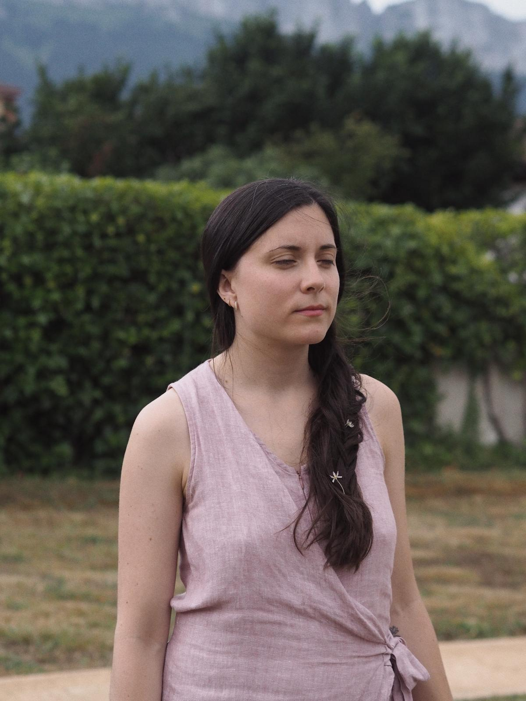
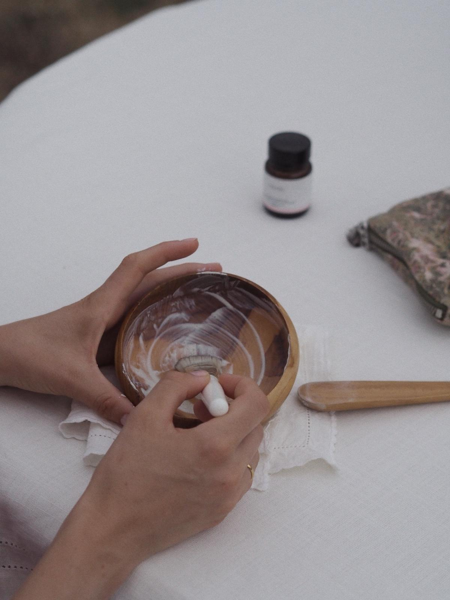

Llevas tiempo buscando el producto correcto.
Puede que lo que tu piel necesite sea que alguien sepa leerla.

observación
7 días antes de la sesión
Recibes un diario de observación que completas en casa durante una semana. Registras cómo reacciona tu piel a lo largo del día, en distintas condiciones y momentos del ciclo. Es la base del diagnóstico y me permite preparar la sesión con tu información real — no genérica.
completa
La primera parte de la sesión
Revisamos juntas el diario y ampliamos con una anamnesis detallada. Todo lo que afecta a tu piel desde dentro:
- Tipo de piel y afecciones activas
- Ciclo hormonal y salud reproductiva
- Salud digestiva y eje intestino-piel
- Nivel de estrés, sueño y hábitos
- Lo que ya tienes en casa y lo que llevas usando
y ritual
Videollamada de 1 hora
Con toda la información, hago el diagnóstico de tu piel y construimos juntas tu ritual personalizado: rutina AM y PM paso a paso, productos concretos de cosmética natural, marcas, orden de aplicación, frecuencia y el porqué científico de cada decisión.
escrito
Tu ritual por escrito
Recibes un protocolo personalizado con todo lo que hemos trabajado: pasos, productos, frecuencias y notas específicas para tu piel. Un documento que es tuyo para consultar siempre que lo necesites.
Prueba antes de invertir
Envío de muestras de los productos recomendados para que puedas probarlos en tu piel antes de comprarlos. El ritual funciona cuando los productos también funcionan para ti.
y ajuste
Semana 1, semana 4 y videollamada de cierre
Seguimiento por mensajería en la semana 1 y la semana 4. Y al final del proceso, una videollamada de 30 minutos para revisar la respuesta de tu piel y afinar la selección de productos si es necesario.

Esto es para ti si
- Llevas tiempo probando productos sin resultados claros
- Tu piel ha cambiado y no sabes cómo adaptarte
- Quieres entender lo que le pasa, no solo taparlo
- Estás dispuesta a apostar por cosmética natural y consciente
Esto no es para ti si
- Buscas recomendaciones de cosmética convencional
- Quieres resultados inmediatos sin proceso
- No estás dispuesta a simplificar tu rutina
Precio
350€
Disponible para clientas en Península y Baleares.
Videollamada · Protocolo escrito · Seguimiento semana 1 y semana 4 incluidos
Esta asesoría trabaja exclusivamente con cosmética natural y, si es posible, orgánica. Al apuntarte, confirmas que estás dispuesta a construir tu rutina desde este enfoque. No se recomiendan productos de cosmética convencional.
Si al cerrar el proceso tu piel necesita algún ajuste adicional, podemos programar sesiones extra de 30 minutos (80€ por sesión), con seguimiento por mensajería incluido hasta la siguiente sesión. Máximo dos semanas entre sesiones.